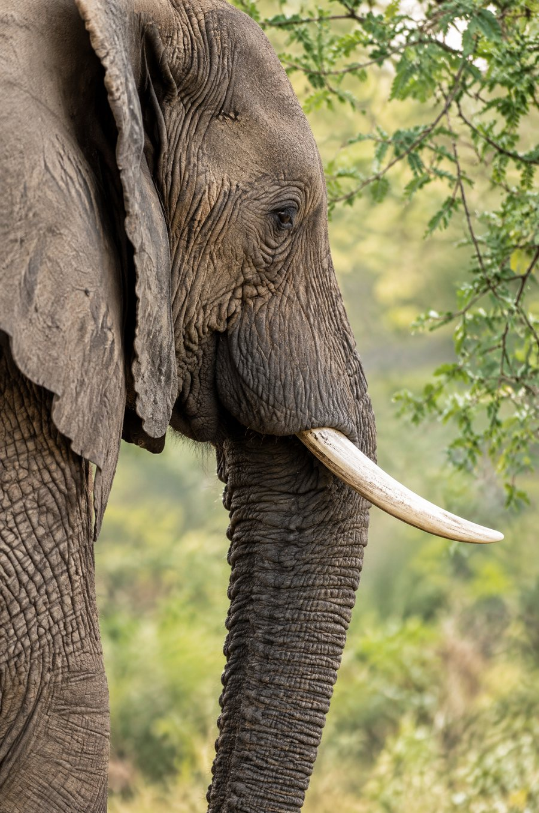

Elephant — Loxodonta africana
The field guide — No. 01
A closer look
Elephants in Africa
Elephant
In the quiet rhythm of the African bush, few animals shape the land quite like the elephant. A keystone species, it opens pathways through woodland, disperses seeds and creates waterholes that sustain countless other lives. To follow an elephant is to see an entire ecosystem in motion.
- Habitat
- Woodland and savanna
- Scientific name
- Loxodonta africana
- Adult weight
- 2,000 – 6,300 kg
- IUCN status
- Vulnerable
A life that shapes the landscape.
